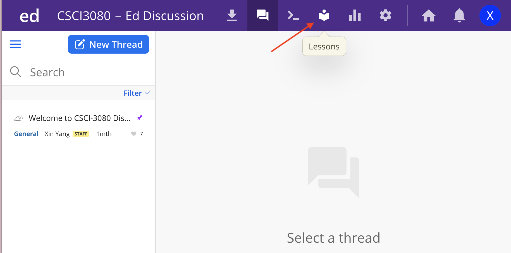
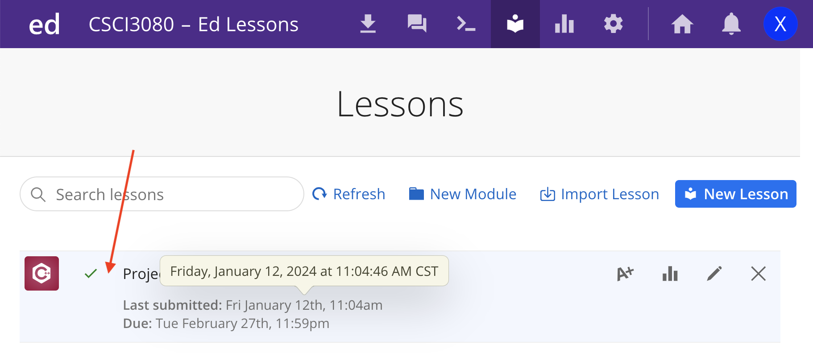
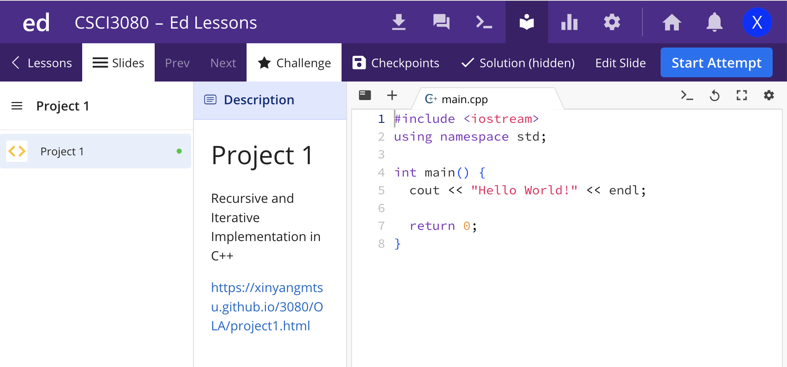

How to Access Project in edStem
Ed Stem is an online IDE (integrated development environment) that can be used with a variety of programming languages, including HTML/CSS, JavaScript, Python, C++, and so on.We're using Ed Stem as the programming platform for CSCI-3080 this semester. You need to edit and submit your project in Ed Stem.
Steps to Access Project in edStem:
Step 1:
Please log in to the CSCI-3080 Class in Ed Stem:Step 2:
After you log in, you should see the following page:
Please Click lessons
Step 3:
After your click lessons, you should see the following:
Please click the Project 1.
Step 4:
After you click the Project 1, you should see the following page:
Congratulations! You can continue to work on your Project 1 now! Please don't forget to click Submit after you finish your Project 1.